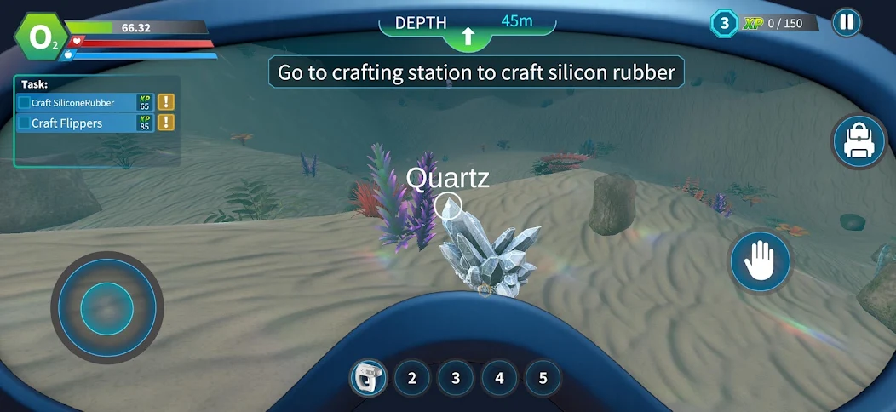
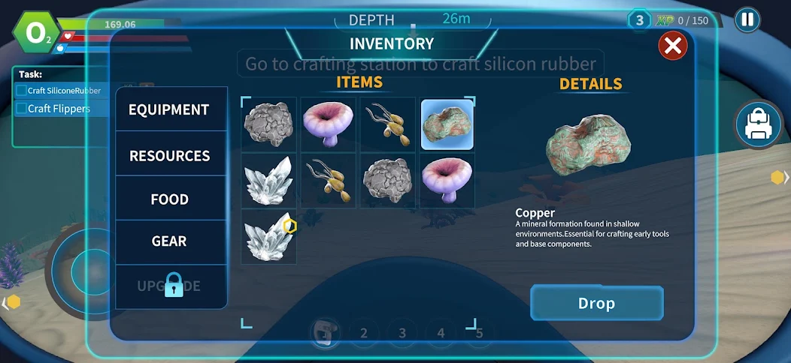
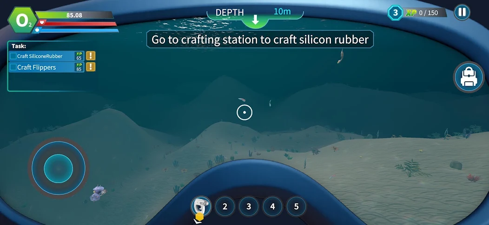

A production Android and iOS underwater survival and crafting game where I built the game-specific systems layer around Invector, including interaction, inventory, scanning, crafting, progression, persistence and mobile production integrations.
Official store screenshots and gameplay footage.



ROLE: Senior Game Developer — Survival Systems, Progression & Mobile Production
Alien Deep Sea Diver Game is a production mobile underwater survival and crafting game developed in Unity for Android and iOS. I integrated Invector as the locomotion and swimming foundation, then built the project-specific gameplay layer around it, including interface-based interactions, underwater survival, inventory and quick slots, resource scanning, ScriptableObject-driven crafting, tasks and objectives, XP progression, persistent save data, mobile UI and production SDK integrations. The project also features a guided onboarding sequence that teaches the complete survival and crafting loop before transitioning into unrestricted exploration.
Framework note: Invector provides the locomotion, swimming, stamina/health and input foundation. I kept the game-specific systems separate and extended that base with custom survival, interaction, inventory, scanning, crafting, progression, persistence and UI systems. Stylized Water 2 and Sickscore HUD Navigation are integrated third-party foundations.
Extended Invector's locomotion and swimming foundation with a custom underwater survival layer connected through event-driven gameplay integration.
Architected a shared camera-raycast interaction pipeline so the player controller can work with different object types through reusable C# interfaces instead of hard-coded per-object logic.
Engineered a state-driven guided onboarding flow that teaches the complete survival loop while temporarily controlling input, UI and environment state.
Developed an instance-based inventory architecture for equipment, gear, resources and food, with persistent item identity and mobile equipment workflows.
Built a persistent resource-discovery mechanic and connected it with level-aware underwater navigation feedback.
Built a data-driven crafting pipeline that connects recipe data, inventory validation, progression and an animated 3D crafting-station presentation.
Implemented separate persistent tasks and ordered objectives, then connected them to XP, level confirmation and level-specific world activation.
Implemented local persistence across structured JSON saves and smaller PlayerPrefs-backed progression flags.
Integrated the mobile UI, rendering and production-service layer around the core gameplay systems.